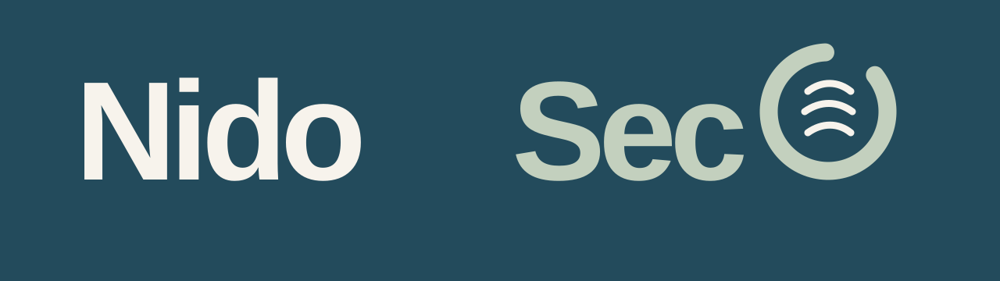
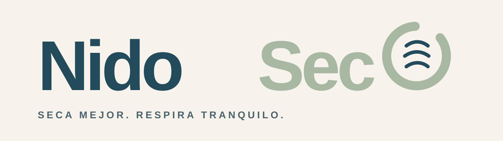
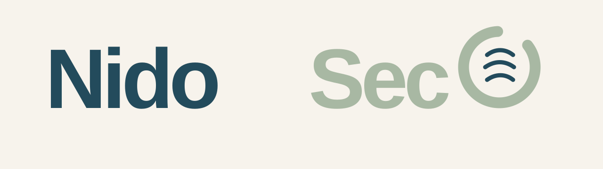
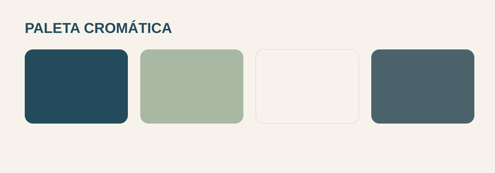

Identidad visual para el cuidado silencioso del aire, el secado de ropa y el bienestar doméstico.
NidoSeco convierte el exceso de humedad en una sensación concreta: hogar cuidado, ropa lista y aire en equilibrio.
Hacer más confortable el hogar mediante un control de humedad claro, silencioso y fiable.
Serena, práctica, protectora y contemporánea. Nunca clínica, fría o industrial.
Soluciones que ayudan a secar, respirar y vivir mejor cada día.
“Tu colada lista antes, sin humedad de más.”
“Un aire más equilibrado para tu casa.”
Se recupera el arte exacto de la primera propuesta aprobada: mismas formas, tipografía, proporciones y O ventilada. El único ajuste es el color Salvia Suave para «SECO» (variante A).

Símbolo autónomo
Para app, controles, etiqueta de producto, favicon y avatar.
Nido transmite hogar y cuidado. SECO, en Salvia Suave, materializa el resultado y facilita la lectura por bloques. La O ventilada es el punto de reconocimiento.
Versión de preferencia: horizontal, en una línea. No redibujar ni alterar tipografía, aro, apertura ni ondas internas.

Dejar un margen mínimo equivalente al ancho de una onda interior de la O en los cuatro lados. No ubicar textos, bordes ni otros logos dentro de este perímetro.
Logotipo completo: 180 px de ancho.
Símbolo: 24 px de ancho.
Logotipo completo: 32 mm de ancho.
Símbolo: 7 mm de ancho.
Usar solo las combinaciones aprobadas.
NidoSeco
La O debe conservar apertura y ondas interiores.
No estirar, comprimir ni inclinar.
Evitar fondos con bajo contraste o textura que impida reconocer la O.

Azul Niebla: identidad y mensajes de confianza.
Salvia Suave: “SECO”, resultados y estados positivos.
Blanco Cálido: fondos principales.
Gris Aire: texto secundario.
Usar Azul Niebla sobre Blanco Cálido para textos. Salvia no se emplea sola para cuerpo de texto pequeño; funciona como acento, superficie o junto a azul.
Aire equilibrado.
Hogar tranquilo.
Uso: titulares, campañas, mensajes clave. Peso 600–700.
Todo bajo control.
Uso: navegación, fichas, datos, instrucciones y cuerpo. Pesos 400, 500, 700.
H1 56/60 px · H2 40/46 px · H3 26/32 px · cuerpo 18/28 px · UI 16/20 px · microtexto 13/18 px (solo información secundaria).
Tres ondas suaves derivadas de la O.
Señal de ciclo controlado y ventilación.
Espacios limpios, cotidianos y habitables.
Luz natural suave, textiles reales, interiores ordenados, sensación de aire y espacio. Mostrar el beneficio: colada seca, estancia confortable y producto integrado. Evitar gotas exageradas, moho visible, estética de laboratorio o lavandería industrial.
Lineal, redondeada, grosor constante y esquinas suaves. Nunca más compleja que el símbolo ventilado.
Cabecera web, fichas de producto y contenidos educativos.
Equipo, embalaje, etiqueta y comunicación nocturna.
App, botón de estado, avatar y sello de garantía.
Claim en campañas y piezas de conversión.
1. Problema cotidiano: humedad, ropa que tarda, sensación cargada.
2. Beneficio directo: secado y equilibrio.
3. Prueba útil: capacidad, modo, consumo, nivel sonoro.
4. Cierre de calma: “Respira tranquilo.”
• Logotipo principal, positivo y negativo
• Símbolo ventilado autónomo
• Paleta cromática
• Manual corporativo en HTML y PDF
La “O” ventilada es el activo distintivo. Mantener siempre su aro abierto y las tres ondas internas; no redibujarla, reemplazarla ni simplificarla.